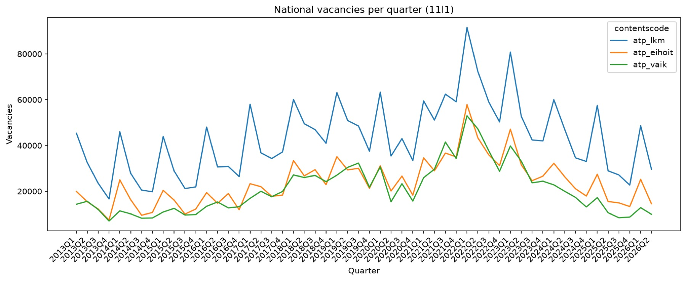
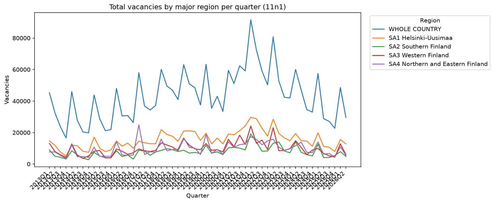
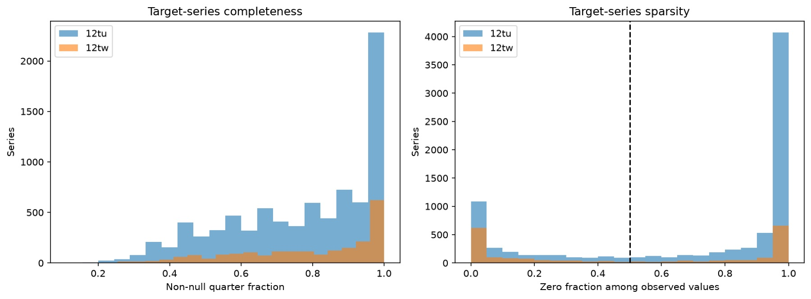
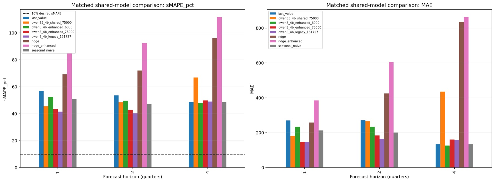

JobAI / Engineering notes
A trained model still has to earn its place
Separating numeric forecasts from sourced explanations, with four baselines as the test.
Completed · beats the baselines at one and two quarters ahead, not at four
- Official data
- Forecast
- Evaluate
- Explain
The problem
JobAI forecasts Finnish quarterly job vacancies one, two and four quarters ahead. A convincing explanation cannot establish that a forecast is accurate, so the project treats the two questions separately: a fine-tuned model produces the number, and a retrieval layer explains it from official sources.
Keep the numbers traceable
The inputs are five official tables from Statistics Finland and KEHA, 957,781 value cells in the snapshot downloaded on 14 September 2026. Every download records its query, table metadata, retrieval date and response hash, so an experiment can be tied to the exact data it used. 139,438 of the quarterly rows have no value; the pipeline preserves them and checks for duplicates, missing quarters and wrong source months instead of quietly filling the gaps. I built this ingestion and validation pipeline.

View full size ↗
View full size ↗Split by time, not by table
Every split is by time and never random, because a random split would let the model see the future of a series it is asked to forecast. Training targets end at 2022Q4, validation forecasts are made from 2023Q1 to 2024Q2, and testing begins at 2024Q3 with targets observed through 2026Q2. The selected adapter learned from 151,727 examples drawn from 1,679 occupation and industry series, each with eight quarters of history.

View full size ↗Set the bar before training
Four simple methods set the bar before any fine-tuning: repeat the last value, repeat the same quarter of the previous year, ridge regression, and ridge with seasonality and trend features. A trained model that cannot beat these has not earned its complexity. Training completion is a milestone; beating the baselines is a separate requirement.
The result: two horizons out of three
The selected model is a Qwen3-4B adapter, fine-tuned with 4-bit QLoRA, with one adapter serving all three horizons. On a matched sample of 1,000 test cases per horizon it beat the best baseline at one quarter ahead, at roughly 41% sMAPE against 51%, and at two quarters, roughly 40% against 47%. At four quarters it did not: a simple last-value forecast was slightly better on sMAPE and clearly better on absolute error.

View full size ↗Why this is not a win
Even the good results are far from the 10% sMAPE goal, and no model reached it. The test set has also been looked at repeatedly during development, so these numbers are a development benchmark, not a guarantee about new data. One more limit: the original training manifest for the selected run is missing, so its prompt design and history length are documented declarations rather than recorded fact. The repository records the model as not having passed deployment.
Give explanations their own evidence
The retrieval layer searches official bulletins and answers with source IDs and quotes that are checked against the text. It explains a forecast and never changes it, which keeps narrative generation from quietly becoming the source of the number. A Streamlit dashboard puts the forecast chat and the evaluation charts in one place.
What I would do next
Re-run the comparison on a test window nobody has inspected, record the training manifest at training time so the provenance gap cannot recur, and treat last value as the real floor at four quarters until a model clearly beats it.